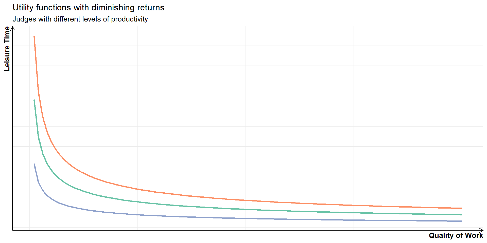

Theories of Judicial Behaviour
Week 2
How do judges make decisions?
- modern judges are meant to apply legal rules to establish facts and decide disputes about the law
- in the process of doing so, they are frequently the ultimate authority deciding what the law “is” (and isn’t)
- in this module we will be more concerned with how judges make decisions rather than how they should make decisions
How do judges make decisions?
the legalist perspective
\[ decision = facts \times law \]
judges consistently apply legal rules to decide disputes
decisions are only guided by facts and the law
judges assess both facts and the law objectively
the ruling is an honest representation of the judge’s views
Legalism
assumptions behind the legalist perspective
there is one or “best” answer to any legal dispute
legal rules are determinate and contain solutions to problems
judges are capable of identifying the best legal answer to a problem
Legalism
issues with the legalist perspective
judges have preferences and unconscious biases
there are often many overlapping rules
there are often many possible ways to decide a dispute (discretion)
Complexity of rules
Let’s consider the following simplistic case.
Law:
Rule 1: The government can force foreign companies to sell their assets if they threaten national security.
Facts:
A company based in a rival country wields a lot of influence in the Country. Its service facilitates the freedom of expression of millions of people. It collects data about its users. It does not share the data with the rival government. The Government invokes Rule 1 and orders a sale of the company’s assets. The company disputes the legality of the order.
Complexity of rules
Law:
Rule 1: The government can force foreign companies to sell their assets if they threaten national security.
Rule 2: Companies are free to operate a business in the country.
Facts:
A company based in a rival country wields a lot of influence in the Country. Its service facilitates the freedom of expression of millions of people. It collects data about its users. It does not share the data with the rival government. The Government invokes Rule 1 and orders a sale of the company’s assets. The company disputes the legality of the order.
Complexity of rules
Law:
Rule 1: The government can force foreign companies to sell their assets if they threaten national security.
Rule 2: Companies are free to operate a business in the country.
Rule 3: Individuals have a right to express themselves freely.
Facts:
A company based in a rival country wields a lot of influence in the Country. Its service facilitates the freedom of expression of millions of people. It collects data about its users. It does not share the data with the rival government. The Government invokes Rule 1 and orders a sale of the company’s assets. The company disputes the legality of the order.
Complexity of rules
in a real legal system, there are millions of rules
- which subset of them should be applied in a case?
the interpretation of both facts and the law entails discretion
Ambiguity and disputes
Ambiguity and disputes
Ambiguity and disputes
where the law is perceived as unambiguous, it is less likely that a plaintiff would sue
- there will be exceptions, e.g. criminal trials (but settlements)
the more ambiguity, the more discretion a judge has in deciding
Ambiguity and disputes

Dyevre, Arthur. “Unifying the field of comparative judicial politics: towards a general theory of judicial behaviour.” European Political Science Review 2, no. 2 (2010): p. 313
Theories of judicial behaviour
attitudinal
economic
cognitive
Attitudinal explanations
Attitudinal explanations
the law alone does not determine case outcomes; judges’ attitudinal preferences matter more
originally motivated by the study of the US Supreme Court (SCOTUS)
judges have political preferences which can be ideological or even partisan
judges might seek desired policy outcomes consciously or subconsciously
Attitudinal explanations
Attitudinal explanations
Attitudinal explanations
SCOTUS votes can be predicted from newspaper descriptions of the nominees (Segal and Cover 1989; Cameron and Park 2009)
with some exceptions (Weinshall-Margel 2011), partisan identification predicts how judges decide
many judicial attitudes can be mapped onto a left-right dimension of political conflict
variation in attitudes stems from a number of sources, including judges’ background characteristics
Attitudinal explanations
“judges’ decisions are a function of what they prefer to do, tempered by what they think they ought to do, but constrained by what they perceive is feasible to do” (Gibson 1983, 9)
attitudinal explanations are most relevant in “policy” cases, i.e. when matters of public policy play a role in the dispute
judicial preferences and decision-making are multidimensional – the identity of the median justice might vary by issue area (Lauderdale and Clark 2012)
- the power of the unidimensional explanation tends to be lower outside the US context
Economic explanations
Economic explanations
judges are self-interested agents who want to maximize their utility
on the one hand, judges care about reputation, salary, career progress and personal satisfaction
on the other hand, judges care about having free time
Economic explanations
Economic explanations
(peak-court) judges prefer writing better researched rulings over producing more of them (Ash and MacLeod 2015; Engel and Weinshall 2020), which is also why they like docket control (Skiple, Bentsen, and McKenzie 2021)
judges have strong intrinsic motivation to perform well, which reduces the effectiveness of extrinsic measures (Ash and MacLeod 2015; Engel and Zhurakhovska 2017)
making leisure time more attractive (e.g. basketball tournament) makes judges do less and worse work (Clark, Engst, and Staton 2018)
Economic explanations
promotion prospects motivate judges to avoid having their decisions overturned on appeal (Salzberger and Fenn 1999)
judges might choose to be deferential towards the government or politically popular causes for the same reason (Sisk, Heise, and Morriss 1998; Ramseyer 2001)
Cognitive explanations
Cognitive explanations
less fully formed theories of decision-making and more studies of various types of cognitive ‘biases’
people are only boundedly rational and instead of conducting strictly rational calculations rely on (biased) heuristics
there are a number of common cognitive heuristics, e.g. anchoring, framing, hindsight bias, which have been shown to affect judges (Guthrie, Rachlinski, and Wistrich 2001; Guthrie, Rachlinski, and Wistrich 2002)
Cognitive explanations
Anchoring: an initial value influences one’s perception of a reasonable estimate of a value.
Guthrie, Rachlinski, and Wistrich (2001) ask judges to award damages in a personal injury case – those exposed to an irrelevant low number awarded 30% less in damages on average
“municipal court judges fined a nightclub three times as much when its name (after its street address) was Club 11,866 rather than Club 58” (Jeffrey J. Rachlinski and Wistrich 2017)
Cognitive explanations
Framing: categorization of decision options as more or less positive. Most people are risk-averse when looking at potential gains and risk-seeking when choosing between options representing losses.
when framing a (sure) settlement as a gain, judges were more likely to endorse it than when framed as a loss (Guthrie, Rachlinski, and Wistrich 2001)
bankruptcy reorganization plans with certain outcomes were more likely to be approved by judges when framed in terms of gains than losses (Jeffrey J. Rachlinski, Guthrie, and Wistrich 2006)
Cognitive explanations
decision-making bias is often driven by in-group favoritism (Kantorowicz-Reznichenko, Kantorowicz, and Weinshall 2022)
- including ethnic (Grossman et al. 2016) and place-based (e.g. Minnesota) in-groups (Wistrich, Rachlinski, and Guthrie 2014)
judges give away their preferences through emotional arousal in oral hearings (Dietrich, Enos, and Sen 2019)
legal training rarely attenuates bias in legal decision-making (Braman and Nelson 2007)
Cognitive explanations
Legally irrelevant information influences how judges decide (Wistrich, Guthrie, and Rachlinski 2005).
sympathetic defendants are treated better, while precedents exert limited impact (Spamann and Klöhn 2016)
defendant with an extramarital affair with a corrupt official was judged more harshly (Liu and Li 2019)
the legally irrelevant information which influences a decision is almost never acknowledged (Spamann and Klöhn 2016; Liu and Li 2019; Kahan et al. 2015)
References
POLS0113: Judicial Politics